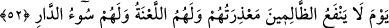

52. O gün zalimlere, özür dilemeleri hiçbir fayda sağlamaz. Artık lânet de
onlarındır, kötü yurt da onlarındır!
“O gün zâlimlere, özür dilemeleri hiçbir fayda sağlamaz.” “Ma’ziret” lafzı “özür”
anlamında olup bu sûrenin başında açıklanmıştı. Mânâ şöyledir: Zâlimlere, bazı
vakitlerde özür dileseler bile inkârlarından dolayı dileyecekleri özür fayda
vermeyecektir. Çünkü boş ve haksız yere özür dilemiş olacaklar ve kendilerine:
“Susun, konuşmayın benimle!” (bk. el-Mü’minûn 23/108) buyrulacaktır. Özürlerinin
fayda vermeyecek olması, “izin verilmeyecek ki özür dileyebilsinler” mânâsında da
(el-Murselât 77/36) olabilir. Bu takdirde kaydın nefyine bağlı olarak kayıtlananın da
nefyedilmesi kabilinden bir üslûb söz konusu olur. Buna göre ifâde, “o gün özür dileme
diye bir şey yoktur ki faydası olabilsin” anlamı taşır.
Arâisü’l-beyan’da şöyle geçer: Bu zâlimlerin zulmü, Hakk’tan halka geçmeleri ve
dünyada özür dileyeceklerine âhirette özür dilemeleridir.
Burada ayrıca müessir olanın vakitler değil, ezelî inâyetler olduğuna da işâret
edilmektedir.
“Artık lânet” yâni ilâhî rahmetten uzaklık “da onlarındır. Kötü yurt” olan cehennem
“de onlarındır.” Ârif müminler ise böyle değildir. Çünkü onlar (şirk, inkâr ve
mâsiyetlerden) ayırabildikleri, özellikle özrü vaktinde yaptıkları için özür dilemeleri
onlara fayda sağlayacaktır. Rahmet ve yurdun iyisi onlarındır.
Âyet-i kerîme cehennemi, “kötü yurt” olarak tavsif ediyor. Çünkü cehennem alevli bir
fırın, takısı en sertidir demirin, dibi derin, içkisi irin, sözü de “biraz daha verin” (Kaf
50/30) olan bir yurddur.
Zâlimlerin en kötüsü Allah’a ortak koşanlardır. Nitekim bir âyette Lokmân (a.s.)’dan
alıntı yapılarak şöyle buyrulur: “Şüphen olmasın ki şirk gerçekten büyük bir
zulümdür.” (Lokmân 31/13) Ortak koşanların en kötüsü de “Şüphesiz cehennemin en
alt
tabakasındakiler
münafıklardır”
(en-Nisâ
4/145)
buyurulduğu
üzere
münâfıklardır. Çünkü îman edenlerle alay edip dururlardı. Bu sebeple, aklı başında
olanların zulümden sakınması gerekmektedir: İster şirk ve günah yüzünden kendine
edeceği zulüm olsun, ister ırz ve namusu ihlal etmek, malını almak gibi bir yolla
başkasına edeceği zulüm olsun... İnsanın zâlimlerin: “- Ey Rabbimiz! Bizi buradan
çıkar da dünyada iken yaptıklarımızın tersini yapalım” diye yalvaracağı ve Allah’ın
kendilerine: “- Ben size düşünüp ibret alacak olanın düşünüp ibret alabileceği
kadar bir ömür vermedim mi!? Üstelik size uyarıcı gelmemiş miydi?! Tadın şunu!
Zâlimler için hiçbir yardımcı yoktur!” (Fâtır 35/37) diyerek cevap vereceği günü hiç
unutmaması lâzımdır.
Rivâyete göre cehennemlikler müthiş bir şekilde ağlamaya başlayacak ve sonunda
gözlerinden kan gelecek. Zebânîlerin başkanı olan Mâlik de: “Ne kadar güzel bir